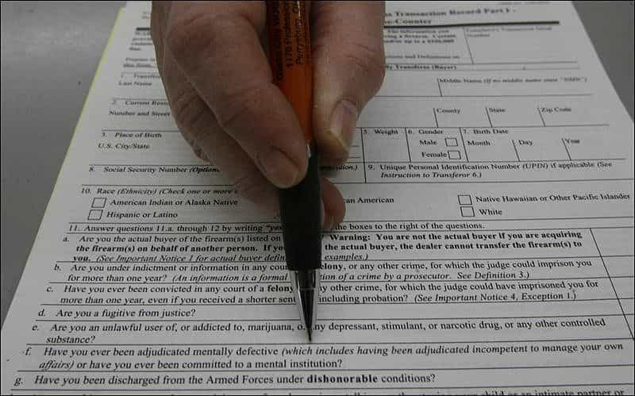
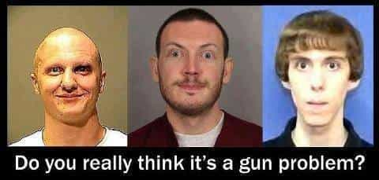

Luke Stranahan is an engineer by trade and an armed patriot by inclination. He writes for Return of Kings as a leisure pursuit and an attempt to do his part to help reverse the slide into moral decrepitude of modern society. Follow him on Twitter.


President Barack Obama has wasted no time this year rolling out more executive fiat designed to imprint his vision of society onto the American people via Executive Actions that are intended to bypass Congress. He issued four Executive Actions on January 4th, 2016, and also made appearances on television to rally support for them. Conjuring up the ghosts of the Sandy Hook kids, he managed to cry on camera at the appropriate time to tie in the emotionalism that is the hallmark of all leftist politics. He then followed up with a CNN exclusive “town hall” meeting on January 7th designed to appear unbiased and accurate.
These are the phony reasons given for the policies he intends to enact:
Filling out NICS paperwork during a purchase.
Well, the problem is, is that about 30 percent, 40 percent of those guns are coming from Indiana across the border, where there are much laxer laws, and so folks will go to a gun show and purchase a whole bunch of firearms, put them in a van, drive up into Mike Pfleger’s neighborhood on the South Side of Chicago where his parish is, open up the trunk, and those things are for sale. – Barack Obama.
The first action is to direct an expansion of the National Instant Criminal Background Check System (NICS). NICS is used for every firearm purchase from a Federal Firearms License (FFL) holding dealer. All new guns, and most used guns, go through a dealer for sale, and are subject to a NICS check. Private sales of used guns, however, are not subject to the NICS check or taxes.
This is a fundamental part of American liberty. The Constitution does not permit the government any power to regulate private sales. Obama’s tactic in this situation is to change the definition of “dealer” to mean “anyone that sells a gun,” so he can build upon the existing law and skirt around his lack of authority to monitor private sales. There was never such a thing as a “Gun Show Loophole;” I can buy a gun via a private sale anywhere the seller and I choose. That’s called freedom of commerce, and it happens to be legal.
If you buy a gun with intent to sell it to someone who cannot own it legally (like homies on the South Side of Chicago), it’s a straw purchase. Since straw purchases, possession of guns by felons, and murder are all illegal already, the point must be to enhance the amount of transactions the NICS covers. Monitoring all firearms transactions is the first step to confiscating all firearms.
This upstanding young citizen would likely not pass a NICS check.
And we’re also trying to close a loophole that has been developing over the last decade, where now, people are using cut-out trusts and shell corporations to purchase the most dangerous weapons — sawed-off shotguns, automatic weapons, silencers — and don’t have to go through background checks at all. -Obama.
Obama twists the truth with this comment on NFA trusts. A National Firearms Act trust is a legal construction designed to place ownership to a trust, instead of a person. These are things like fully automatic weapons, short barreled rifles and shotguns, and silencers, and all must have federal stamps and permits to be legally had. The idea is so that, when a trustee dies, it is not illegal to inherit the NFA guns, as the permits transfer, instead of being illegal while the heir reapplies or sells the guns.
This is, quite simply, a lie on Obama’s part, and another “half law” designed to remove yet more guns from lawful owners via legalese. All guns going through dealers must do the NICS check, trusts included. What’s going to be next, a NICS check on you when you inherit your father’s gun?
Properly attired wife-beater.
The first part of this was to ensure that all dealers report all lost and stolen guns. While this may seem like a decent plan on the surface, it’s another way of getting the camel’s nose into the tent. Checking out a lost or stolen gun’s data can turn into recording all of a dealer’s transactions, current and previous, and then you have de-facto registration of all of those guns (and their owners).
The other part will ring familiarly here. Obama directed federal help to state agencies dealing with domestic violence for “wider options.” If someone you are with calls in a complaint of domestic violence, when the police come for the investigation, the first thing they take is all your guns, even if there is no arrest. You won’t get them back very quickly, and you may never get them back at all. The disallowing of certain people to possess guns, and the confiscation of said guns, simply furthers the plan of eventual confiscation of all guns. This action’s goal is to make sure all state agencies tow the Federal line, as Federal assistance always comes with rules.

If you are mentally ill, you are not allowed to possess guns. The NRA, and other organizations, have stonewalled the CDC (a fact that Obama lamented), because of abuses of being designated as such. Obamacare, insurance companies making doctors ask about firearms ownership of their patients, and Social Security “dependent” status are all parts of linking your healthcare information together, and using that information to remove your rights by labeling you defective.
Part of the left’s argument, in an attempt to make it more palatable, is “Of course, everyone should be able to own guns, except X, Y, and Z.” It sounds reasonable until you find out that everyone can now be classified as X, Y, or Z at their whim.
Personalized weapons only work in film.
If you are a gun-owner, I would think that you would at least want a choice so that if you wanted to purchase a firearm that could only be used by you, in part to avoid accidents in your home, in part to make sure that if it’s stolen, it’s not used by a criminal, in part if there’s an intruder, you pull the gun, but you — somehow it gets wrested away from you, that gun can’t be turned on you and used on you, I would think there might be a market for that. – Obama
Firearms are a mature technology; there hasn’t been a fundamental improvement in the basic firearm since the development of the assault rifle in the forties. Firearms are purely mechanical systems, propelled by chemical energy ignited into kinetic; to put electronic interlocks on them is the height of stupidity.
The solution to the potential problem of “having a gun wrested away from you” is training, good situational awareness, and having already thought through the whole “would I really shoot someone in this situation?” mental debate. You don’t need a prone-to-failure (or outside intervention) battery powered fingerprint scanner or similar technology in a self-defense scenario.
Obama’s tactics, like all liberals on this issue, is to use a tragedy (or an anniversary of a tragedy if a fresh one doesn’t present itself) to trigger “the feels” and press for legislation that is one more cut in the thousand that is the death of our rights to firearms, and anything else essential to preserve our freedoms. I urge everyone to review the Gun Control Act of 1934 and 1968 to see what has already been lost.
The left doesn’t hate guns; they hate YOU having guns. They are protected by people with guns, and they’ll use people with guns to take away yours, if and when they semi-legally pass legislation to do so, and those people will use those guns on you if you resist. Gun control has never been about the guns; it’s always been about control.
Every government atrocity committed since firearms have been developed has always been preceded by gun control, registration, prohibition, and confiscation. People fear their government, and live in an uneasy truce their whole lives, trusting that, by being a good citizen and believing anyone that gets arrested was not, they will escape persecution or prosecution.
And, by the way, the young man who killed those kids in New Town, he didn’t have a criminal record, and so, we didn’t know ahead of time, necessarily, that he was going to do something like that. – Obama.
Freedom and liberty isn’t necessarily safe. We are living in the cesspool of the failed liberal experiment with the divorce and prescription drugs of our parents giving rise to the numb narcissism and anti-socialism prevalent in our generations. The left’s solution is to police us so that the abandoned and ill who don’t bow to their assigned role can’t act out in rage and are relegated to live and die in misery and frustration. All of us, especially those who display independent thought, are thought of as the next potential shooter.

There is another solution. The number of people tired of an omnipotent government is growing. The left’s rhetoric of guns being just for criminals and rednecks is failing. The fact that the possession of a gun by a citizen simply empowers them to act in their own defense and says nothing about their politics, stances, or personality is being realized across all levels.
Every political debate should be looked at as “Is the government trying to restrict my ability to do something?” and opposition to the formation and enforcement of any such restriction is the logical conclusion. Draw the line in the sand for government interference in your life and tolerate no violations of your rights as a man.
The answer to the question of “Should the government….” is always “NO!”
Read More: Future Leaders Of America Call To Abolish Freedom Of Speech And Press